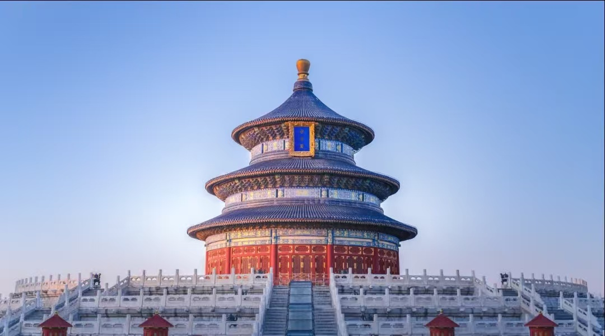
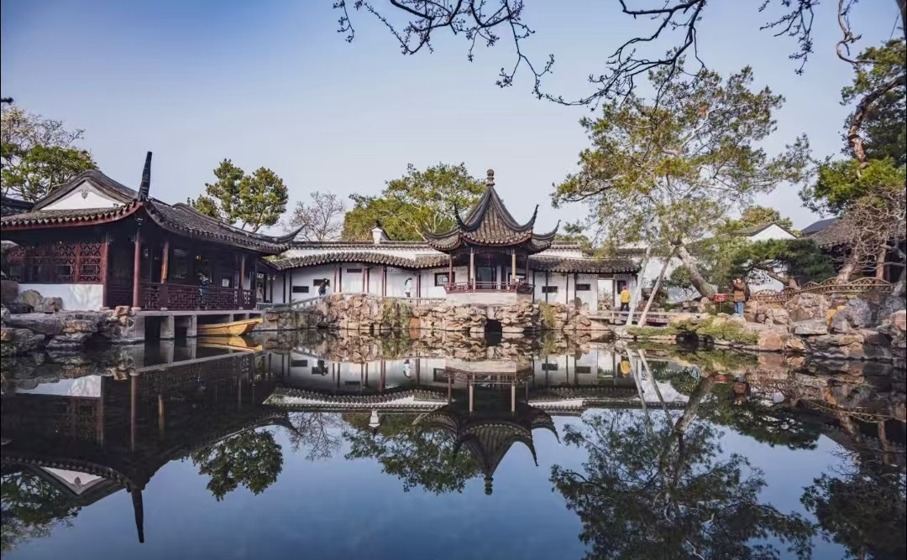

礼制与信仰
在中国古代，皇帝自称“天子”，意思是天的儿子。既然是天的儿子，就必须定期向“老天爷”汇报工作、表达感恩，并祈求风调雨顺、国泰民安。这项活动叫做 “祭天大典”，是国家最高规格的典礼。天坛，就是明清两朝皇帝专门用来举行这项典礼的“神圣空间”。它建于1420年（与故宫同时期），比紫禁城还大四倍。天坛的建筑处处蕴含与天对话的密码，祈年殿、圜丘坛、回音壁，凝聚着古人对苍穹的敬畏与虔诚。

 安居与统治
在黄土高原，古人没钱盖房，便向大地“借”洞而居。窑洞冬暖夏凉，厚土墙挡住风沙，土炕连着灶台，烧火做饭顺便暖了被窝。这里没有金碧辉煌，只有最朴素的生存智慧。几代人挤在一盘炕上吃饭、睡觉、聊天，接地气也接人气。窑洞不是简单的住所，而是老百姓与土地最深的依恋。从靠崖窑到地坑院，每一孔窑洞都凝聚着黄土儿女与自然共生的生活哲学。
安居与统治
在黄土高原，古人没钱盖房，便向大地“借”洞而居。窑洞冬暖夏凉，厚土墙挡住风沙，土炕连着灶台，烧火做饭顺便暖了被窝。这里没有金碧辉煌，只有最朴素的生存智慧。几代人挤在一盘炕上吃饭、睡觉、聊天，接地气也接人气。窑洞不是简单的住所，而是老百姓与土地最深的依恋。从靠崖窑到地坑院，每一孔窑洞都凝聚着黄土儿女与自然共生的生活哲学。
 通行与守卫
在河北赵县洨河上，隋代匠人李春用一块块巨石，砌出了一座没有桥墩的单孔弧桥——赵州桥。它首创“敞肩拱”，两边各开两个小拱，既减轻桥身重量，又利于泄洪。一千四百年来，洪水冲不垮，地震摇不倒，至今稳稳横跨河上。赵州桥不只是桥，更是中国古代力学与美学的完美结合，是石头写成的传奇。它见证了桥梁技术与实用功能的至高融合，至今仍被世界桥梁界奉为经典。
通行与守卫
在河北赵县洨河上，隋代匠人李春用一块块巨石，砌出了一座没有桥墩的单孔弧桥——赵州桥。它首创“敞肩拱”，两边各开两个小拱，既减轻桥身重量，又利于泄洪。一千四百年来，洪水冲不垮，地震摇不倒，至今稳稳横跨河上。赵州桥不只是桥，更是中国古代力学与美学的完美结合，是石头写成的传奇。它见证了桥梁技术与实用功能的至高融合，至今仍被世界桥梁界奉为经典。

游赏与寄情
在苏州，造园者把山水、花木、亭台塞进一方小院，造出一个可居、可游、可赏的梦。拙政园、留园等名园，不求宏大，只讲究“虽由人作，宛自天开”。一步一景，曲径通幽，借远处的塔、叠假山的洞，让人感觉空间无穷无尽。园主多是失意文人，他们把官场烦恼关在门外，躲进这小小天地，吟诗作画，寄情山水。苏州园林，是中国文人的精神后花园，也是东方生活美学的极致体现。
